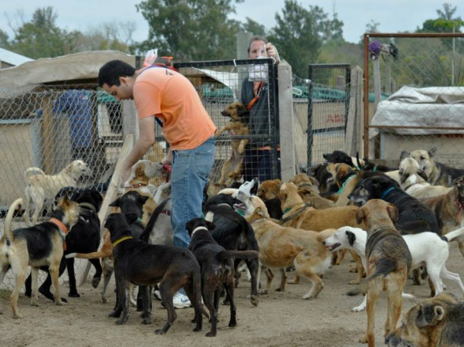

Huellitas: Rescates y adopciones responsables
Los animales son seres incondicionales nos regalan su amor, su compañía y su lealtad sin pedir nada a cambio. Pero muchos de ellos terminan en la calle, solos, pasando frío, hambre y miedo. En Huellitas queremos cambiar esa realidad. Este es un espacio para conectar a quienes rescatan y albergan animales que no pueden quedarse con ellos, con quienes sueñan con darles un hogar lleno de cariño. Porque creemos que cada uno de estos maravillosos seres merece una segunda oportunidad y una familia que los ame. Sabemos que no podemos ayudar a todos los que lo necesitan, son miles los animales en situación de abandono, pero cada historia que logramos cambiar nos motiva a seguir. Por eso también contamos con un refugio físico, donde podés venir a conocerlos, compartir un rato con ellos y, si querés, sumarte como voluntario para ser parte de esta gran familia que nunca deja de crecer.
